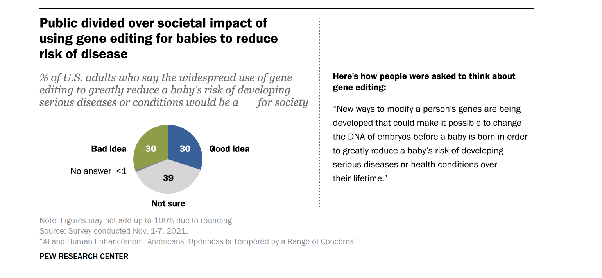

🇺🇸 US Germline Gene Editing Laws
- Federal Restrictions: The U.S. bans the use of federal funds for research on human germline gene therapy. While no federal law outright bans all germline gene editing, Congress has enacted annual spending restrictions that prevent the FDA from considering clinical trial applications involving heritable genetic modifications in embryos. The Dickey-Wicker Amendment also prohibits federal funding for research involving the creation or destruction of human embryos.
- Private Funding: Privately funded germline gene editing research is not explicitly illegal, but any therapy intended for clinical use would still require FDA approval, which is currently blocked by federal spending restrictions.
- Ethical and Scientific Debate: The clinical use of germline gene editing is highly controversial due to unknown long-term risks and ethical concerns, especially since future generations cannot consent to the changes. After the 2018 announcement of gene-edited babies in China, U.S. scientists and policymakers called for a global moratorium on clinical germline editing. Some experts warn that a moratorium could stifle beneficial research, while others argue it is necessary to prevent unethical uses.
- Recent Research: U.S. scientists have used CRISPR to edit disease-causing genes in embryos for research only-these embryos are not implanted or brought to term.
- Public and NGO Views: Most advocacy and faith groups in the U.S. oppose germline editing, citing safety and ethical risks, though some support tightly regulated research on somatic (non-heritable) gene editing and mitochondrial replacement therapy.
-
Regulatory Timeline Highlights:
- 1996: Dickey-Wicker Amendment restricts federal funding.
- 2015: Congress attaches annual bans to FDA funding.
- 2017: National Academy of Sciences suggests clinical trials could be considered under strict conditions.
- 2018–2019: Calls for global moratorium and international standards after Chinese gene-edited babies.
Bottom line: Germline gene editing is effectively prohibited in the U.S. for clinical use, especially with federal funds, due to ethical, legal, and safety concerns. Privately funded research is possible but cannot move to clinical trials under current law, and the debate over whether to allow or regulate such research continues.

Source: Genetic Literacy Project
🇪🇺 European Union: Germline / Embryonic Gene Editing
- Clinical Ban, Regulatory Gaps: Germline gene editing for clinical purposes is banned across the EU, but it is unclear if this extends to research. The 2014 EU Clinical Trials Regulation prohibits gene therapy clinical trials that modify the germline, but does not specify rules for non-clinical research.
- Regulatory Bodies: Oversight is provided by the EU Commission, European Medicines Agency (EMA), and Federation of European Academies of Medicine (FEAM). Individual Western European nations often have additional bans.
- Guiding Principles: The 2000 EU Charter of Fundamental Rights and the 1997 Oviedo Convention prohibit eugenic practices and only allow genome modification for preventive, diagnostic, or therapeutic purposes-not for altering descendants’ genomes.
- Research Ambiguity: Oviedo protects scientific freedom but prohibits creating embryos for research. Research on existing embryos is allowed, but editing embryos to erase heritable disease (as in the US, China, or Japan) is not permitted.
- National Differences: 18 European countries-including Italy, Sweden, the UK, Germany, and the Netherlands-have not ratified or signed the Oviedo Convention, partly due to its strict limits on embryo research.
- Recent Developments: After the Chinese gene-edited babies controversy, EU researchers called for a global moratorium on clinical germline editing. Some EU societies condemned the Chinese scientist’s actions.
- NGO & Ethics Reactions: Most European ethics bodies support a continued clinical ban due to safety and ethical risks, while some scientists argue for updated rules to allow non-clinical research. There are also concerns about eugenics and stigmatization.
- Products/Research: No approved products or clinical research in the EU.
-
Key Regulatory Timeline:
- 2018: German project calls for loosening research bans.
- 2017: Council of Europe recommends forbidding pregnancies from genetically modified embryos.
- 2014: EU Clinical Trials Regulation bans germline gene therapy clinical trials.
- 2000: EU Charter of Fundamental Rights prohibits eugenic practices.
- 1997: Oviedo Convention restricts genome modification to non-heritable purposes.
Bottom line: The EU bans germline gene editing for clinical use, but research rules are less clear and vary by country. Most EU nations and ethics bodies support a ban on clinical applications, but debate continues over research and future regulation.
Statistics
- Global Research: Over 1,000 research papers published on germline gene editing in the last decade.
- Public Opinion: 60% of Americans support germline gene editing for serious diseases, but only 30% support it for enhancement.
- Funding: Over $1 billion invested in gene editing research globally in 2020.

Source: Pew Research Center